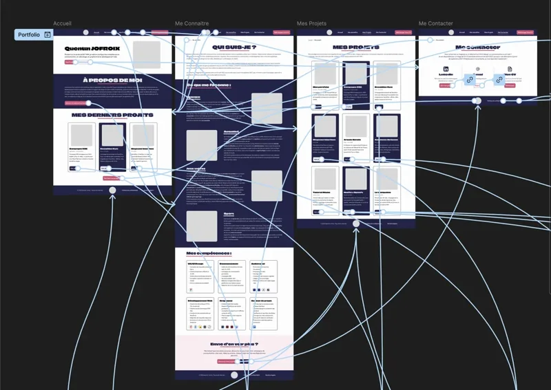
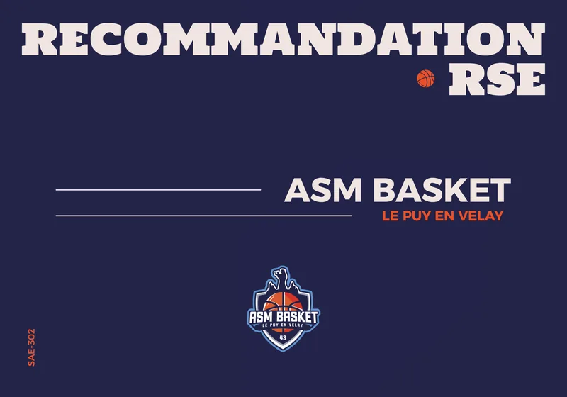
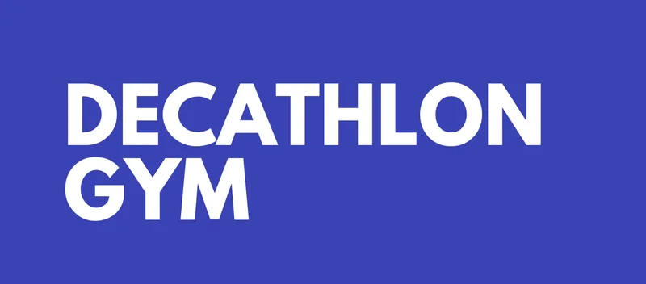
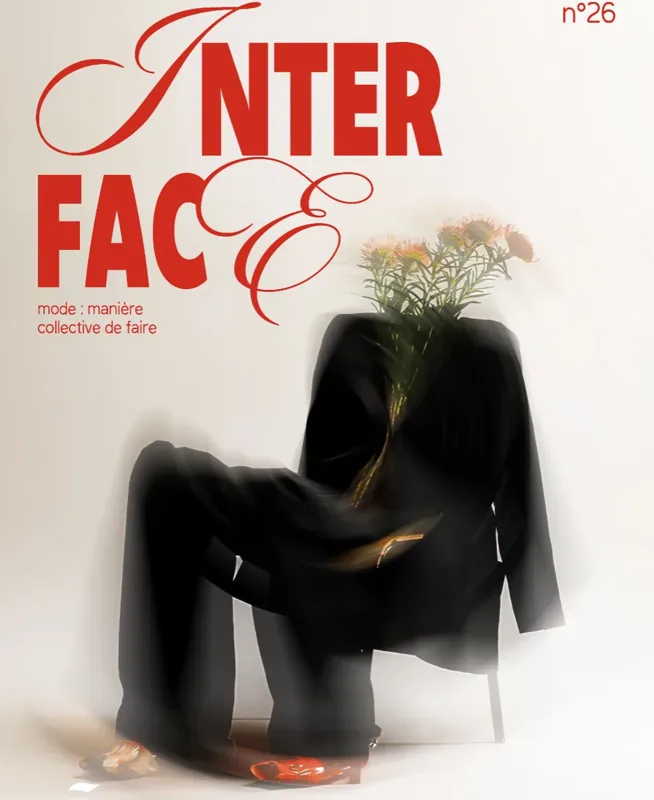
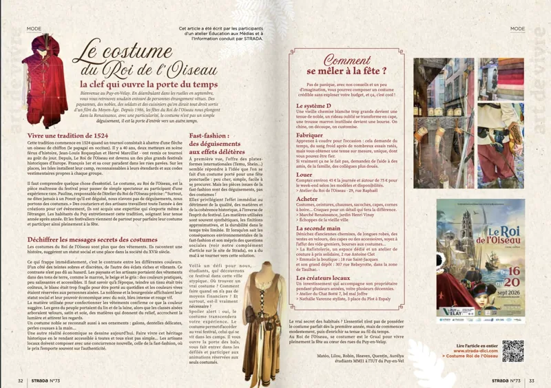
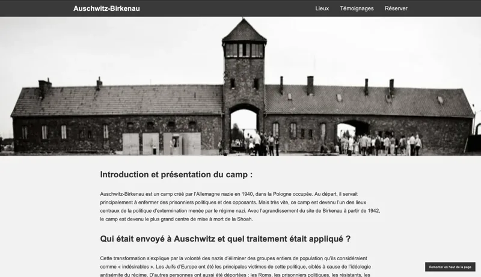
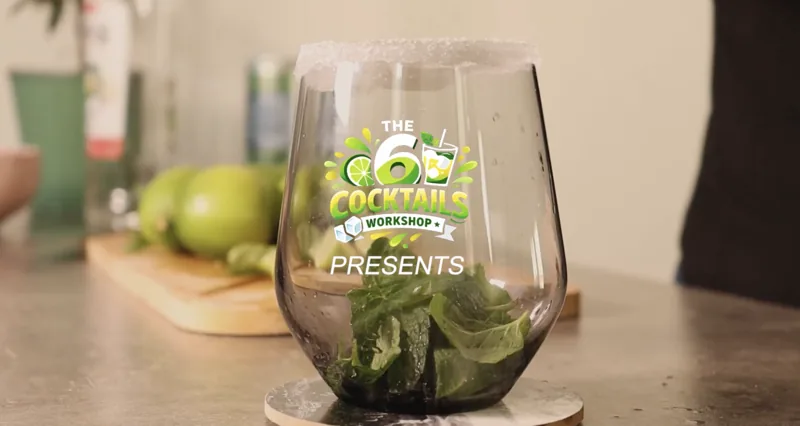
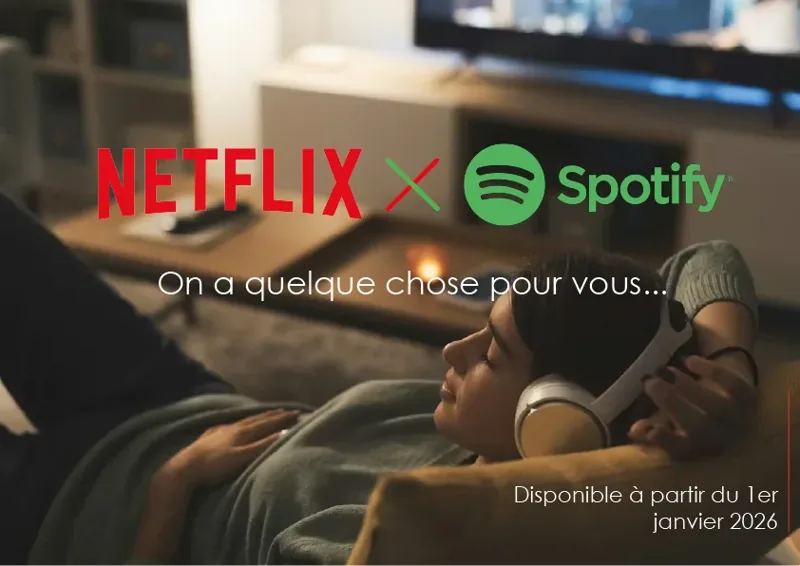
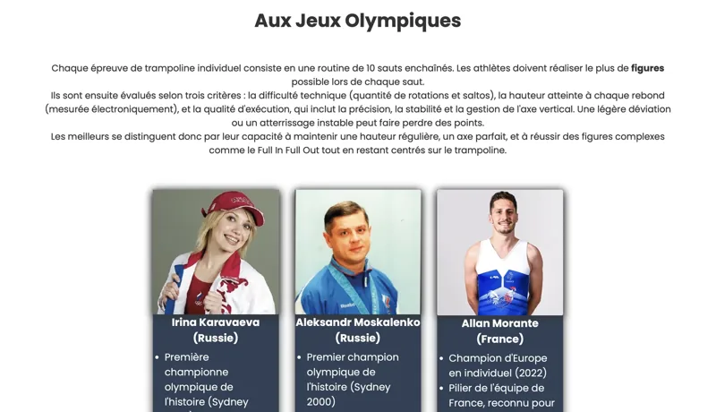

Mon portfolio
Octobre - Novembre 2026
Conception de A à Z de mon portfolio sur Figma : wireframes, choix typographiques et maquettes animées pour ordinateur et mobile.
De la stratégie de communication à la maquette d’un site, en passant par la vidéo, chaque projet est pour moi l’occasion d’explorer une nouvelle facette de la création numérique. Voici ceux dont je suis le plus fier, réalisés seul ou en équipe pendant mon BUT MMI.

Octobre - Novembre 2026
Conception de A à Z de mon portfolio sur Figma : wireframes, choix typographiques et maquettes animées pour ordinateur et mobile.

Septembre - Octobre 2026
Campagne RSE écologique pour l’ASM Basket Le Puy-en-Velay : un partenariat avec Recycl’Ball pour collecter et recycler les ballons usagés.

Avril - Juin 2026
Campagne de lancement de Decathlon Gym, une salle de sport accessible à tous imaginée pour Decathlon : affiche, vidéo, réseaux sociaux et site vitrine.

Avril 2026
26e édition d’Interface, le magazine annuel des étudiants de BUT MMI, entièrement réalisé par la promotion : articles, visuels et sponsors.

Mars – Avril 2026
Article pour le magazine local Strada sur les costumes des fêtes du Roi de l’Oiseau, nourri d’interviews d’artisans et de passants du Puy-en-Velay.

Mars 2026
Site web dynamique sur le lieu de mémoire d’Auschwitz-Birkenau, relié à une base de données : lieux, témoignages, réservations et espace d’administration.

Janvier 2026
Tutoriel vidéo pour réaliser un mojito : écriture du script et du storyboard, tournage, montage et composition d’une musique originale aux accents jazz.

Décembre 2025
Recommandation de communication pour une nouvelle fonctionnalité Netflix × Spotify : retrouver et écouter en un clic les musiques de ses films et séries.

Novembre 2025
Mon premier site web : cinq pages sur le trampoline, de ses origines aux Jeux olympiques, codé en HTML et CSS avec un formulaire traité en PHP.